Background
Our lighting technique results are not too bad. The light is nicely interpolated over the model and conveys a sense of realism to the scene. This, however, can be improved tremendously. In fact, the same interpolation is actually an obstacle because sometimes, especially when the undelying texture represents a bumpy surface, it makes it look too flat. As an example, take a look at the following two images:
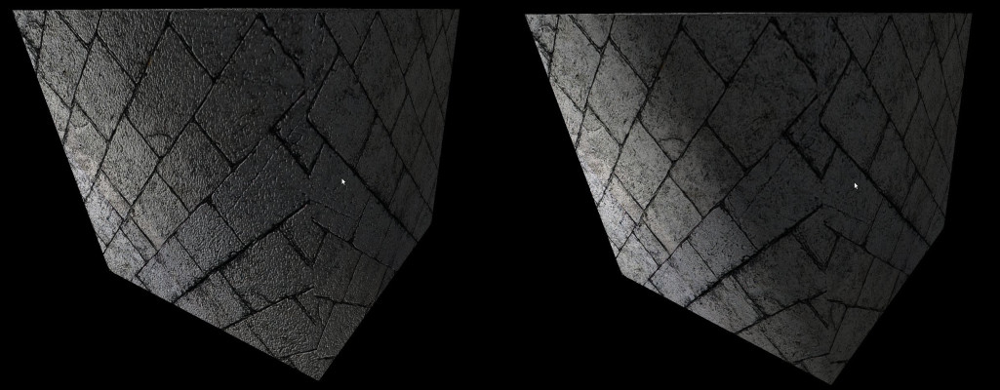The left image definitely looks better the than the right one. It conveys the sense of the bumpiness of the stone much better while the right image looks too smooth for a brick texture. The left image has been rendered using a technique known as Normal Mapping (a.k.a Bump Mapping) and this is the subject of this tutorial.
The idea behind normal mapping is that instead of interpolating the vertex normals across the triangle face (which creates the smoothness we are trying to get rid off) they can simply be sampled from a texture. This represents the real world better because most surfaces (especially the ones we are interested in for gaming) are not that smooth such that light will be reflected back in accordance with the way we interpolate the normals. Instead, the bumps on the surface will make it reflect back at different directions, according to the general direction of the surface at the specific location where the light hits. For each texture these normals can be calculated and stored in a special texture which is called a normal map. During lighting calculations in the fragment shader the specific normal for each pixel is sampled and used as usual. The following images show the difference between the normals in regular lighting and normal mapping:
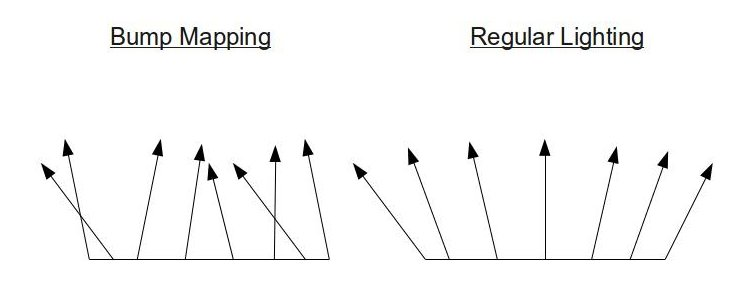We now have our normal map and the true (or at least a good approximation of) surface normals are stored in it. Can we simply go ahead and use it? no. Think for a moment on the cube with the brick texture above. The same texture is applied on all six faces and therefore, the same normal map that goes along with it. The problem is that each face is pointing at a different direction so its interaction with an arbitrary light ray is different. If we use the normal vectors from map without any modification we would get incorrect results because the same normal vector cannot be correct for six faces pointing at different directions! For example, the normals of the top face point in the general direction of (0,1,0), even on a very bumpy surface. However, the normals of the bottom face point in the general direction of (0,-1,0). The point is that the normals are defined in their own private coordinate space and some conversion must be done in order to bring them to world space where they can participate in lighting calculations. In a sense, this concept is very similar to what we did with vertex normals. They were defined in the object local space and we transformed them to world space using the world matrix.
Let's define the coordinate system in which the normal vectors exist. This coordinate system requires three orthogonal axes of unit length. Since the normal is part of a 2D texture and 2D textures have two orthogonal axis U and V (both of unit length) the common practice is to map the X component of the system to the U axis and the Y component to the V axis. Remember that U goes from left to right and V from bottom to top (the origin in that system is the bottom left corner of the texture). The Z component of the system is considered to be going straight up from the texture and is perpendicular to both X and Y:
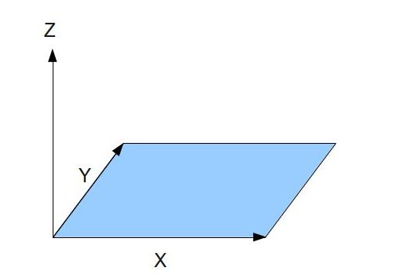The normal vectors can now be specified in reference to that coordinate system and stored in the RGB texels of the texture. Note that even on a bumpy surface we still expect the general direction of the normals to point out from the texture. i.e. the Z component is the dominant one while the X and Y just make the vector tilt a bit (or a lot) from side to side. Storing the XYZ vector in an RGB texel makes most normal maps rather bluish as in the following example:

Here's the first five texels of the top row of this normal map (when going from left to right): (136,102,248), (144,122,255), (141,145,253), (102, 168, 244) and (34,130,216). The dominance of the Z here cannot be mistaken.
What we do next is to go over all the triangles in our model and place the normal map on each one in a way that the texture coordinates of each vertex will match their location on the map. For example, say that the texture coordinate of a given triangle are (0.5,0), (1, 0.5) and (0,1). The normal map will be placed as follows:
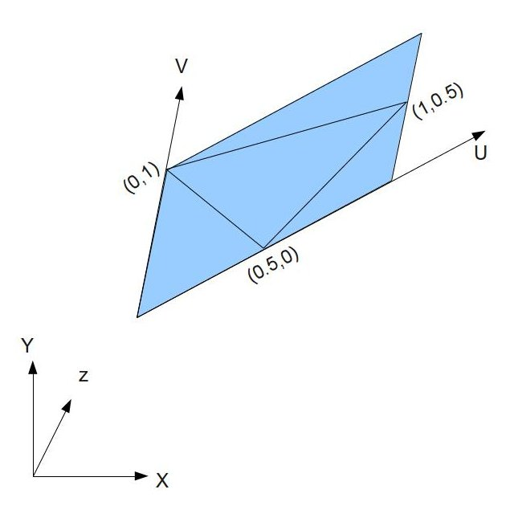In the picture above the coordinate system on the bottom left corner represents the object local space.
In addition to texture coordinates the three vertices also have 3D coordinates that represent their position in the object local space. When we placed the texture on top of the triangle above we've essentially given a value to the U and V vectors of the texture in the object local space. If we now calculate U and V in the object local space (as well as U cross V which is the normal to the texture) we can generate a transformation matrix to move the normals from the map into the object local space. From there they can be transformed to world space as usual and take part in lighting calculation. The common practice is to call the U vector in the object local space the Tangent and the V vector in the object local space the Bitangent. The transformation matrix that we need to generate is called a TBN matrix (Tangent-Bitangent-Normal). These Tangent-Bitangent-Normal vectors define a coordinate system known as Tangent (or texture ) space. Therefore, the normals in the map are stored in tangent/texture space. We will now find out how to calculate U and V in object space.t
Let's take a look at the picture above more generically. We have triangle with three vertices at positions P0, P1 and P2 and texture coordinates (U0,V0), (U1,V1) and (U2,V2):
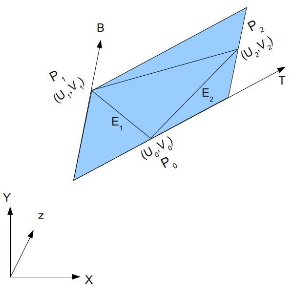We want to find the vectors T (representing the tangent) and B (representing the bitangent) in object space. We can see that the two triangle edges E1 and E2 can be written as a linear combination of T and B:
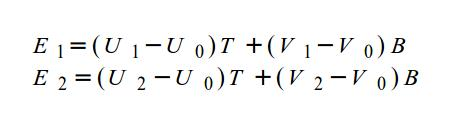This can also be written as follows:
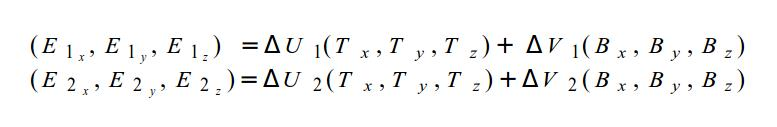It is now very easy to move to a matrix form:
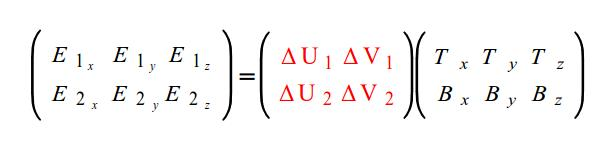We want to extract the matrix on the right hand side. To do that we can multiply both ends of the equation by the inverse of the matrix marked in red above:
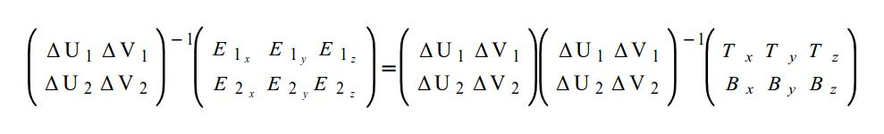Now we have the following:
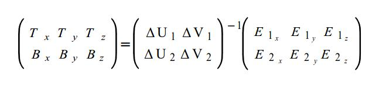After calculating the matrix inverse we get:
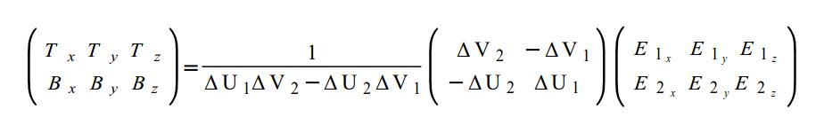We can run this process on every triangle in the mesh and generate tangent and bitangent vectors per triangle (same vectors for the three triangle vertices). The common practice is to store a per-vertex tangent/bitangent by averaging all the tangents/bitangents of the triangles that share that vertex (same as we do for vertex normals). The reason is to smooth out the effect as we travel across the triangle face and avoid hard breaks on the edges of neighboring triangles. The third element of this coordinate system, the normal, is the cross product of the tangent and bitangent. This trio of Tangent-Bitangent-Normal can now serve as a basis for a coordinate system and be used to transform the normal from the normal map into the local object space. The next step is to transform it to world space and use it for lighting calculations. However, we can optimize it a bit by transforming the Tangent-Bitangent-Normal themselves into world space and only then transform the normal from the map. This will provide the normal in world space directly.
In this tutorial we will do the following:
- Supply the tangent vector to the vertex shader.
- Transform the tangent vector to world space and pass it to the fragment shader.
- Use the tangent vector and normal (both in world space) to calculate the bitangent in the fragment shader.
- Generate a world space transformation matrix using the tangent-bitangent-normal.
- Sample the normal from the normal map.
- Transform the normal to world space using the above matrix.
- Continue lighting calculations as usual.
There is one peculiarity which we will need to address in our code. On the pixel level the tangent-bitangent-normal are not really an orthonormal basis (three unit length vectors that are perpendicular to one another). Two reasons contribute to that - first, we average the tangents and normal per vertex according to the triangles that share it, and second, the tangents and normals are interpolated by the rasterizer and on the pixel level we see the interpolated result. This makes the tangent-bitangnet-normal loose some of their "orthonormal qualities". But to transform from tangent space into world space we will need an orthonormal basis. The solution is to use the Gram-Schmidt process. This process takes a group of vectors and turns them into an orthonormal basis. In a nutshell, the process is as follows: select vector 'A' from the group and normalize it. Then select vector 'B' and break it into two components (the two components are vectors whose sum is 'B') where the first component points in the direction of 'A' and the second component is perpendicular to it. Now replace 'B' by the component that is perpendicular to 'A' and normalize it. Continue this process on all vectors in the group.
The end result of all this is that we are not using the mathematically correct tangent-bitangent-normal vectors but we are getting the required smoothness to avoid hard breaks on triangle edges.
Source walkthru
(mesh.h:33)
struct Vertex
{
Vector3f m_pos;
Vector2f m_tex;
Vector3f m_normal;
Vector3f m_tangent;
Vertex() {}
Vertex( const Vector3f& pos,
const Vector2f& tex,
const Vector3f& normal,
const Vector3f& Tangent )
{
m_pos = pos;
m_tex = tex;
m_normal = normal;
m_tangent = Tangent;
}
};
This is our new Vertex structure with the new addition of the tangent vector. We will calculate the bitangent in the fragment shader. Note that the normal of the tangent space is identical to the regular triangle normal (since the texture and triangle are parallel). Therefore, the vertex normals in the two coordinate system are also identical.
for (unsigned int i = 0 ; i < Indices.size() ; i += 3) {
Vertex& v0 = Vertices[Indices[i]];
Vertex& v1 = Vertices[Indices[i+1]];
Vertex& v2 = Vertices[Indices[i+2]];
Vector3f Edge1 = v1.m_pos - v0.m_pos;
Vector3f Edge2 = v2.m_pos - v0.m_pos;
float DeltaU1 = v1.m_tex.x - v0.m_tex.x;
float DeltaV1 = v1.m_tex.y - v0.m_tex.y;
float DeltaU2 = v2.m_tex.x - v0.m_tex.x;
float DeltaV2 = v2.m_tex.y - v0.m_tex.y;
float f = 1.0f / (DeltaU1 * DeltaV2 - DeltaU2 * DeltaV1);
Vector3f Tangent, Bitangent;
Tangent.x = f * (DeltaV2 * Edge1.x - DeltaV1 * Edge2.x);
Tangent.y = f * (DeltaV2 * Edge1.y - DeltaV1 * Edge2.y);
Tangent.z = f * (DeltaV2 * Edge1.z - DeltaV1 * Edge2.z);
Bitangent.x = f * (-DeltaU2 * Edge1.x + DeltaU1 * Edge2.x);
Bitangent.y = f * (-DeltaU2 * Edge1.y + DeltaU1 * Edge2.y);
Bitangent.z = f * (-DeltaU2 * Edge1.z + DeltaU1 * Edge2.z);
v0.m_tangent += Tangent;
v1.m_tangent += Tangent;
v2.m_tangent += Tangent;
}
for (unsigned int i = 0 ; i < Vertices.size() ; i++) {
Vertices[i].m_tangent.Normalize();
}
This piece of code is an implementation of the algorithm that calculates the tangent vectors (described in the background section). The Indices array is traversed and the triangle vectors are retrieved from the Vertices array by their indices. We calculale the two edges by substracting the first vertex from the second and the third vertices. We do a similar thing with the texture coordinates and calculate the deltas along the U and V axes of the two edges. 'f' represents the fraction that appears on the right hand side of the final equation in the background section. Once 'f' is known both the tangent and bitangent can be calculated by multiplying it by the product of the two matrices. Note that the calculation of the bitangent appears for the sake of completeness. The only thing that we really need is the tangent which we accumulate into the three vertices. The last thing that we do is scan the Vertices array and normalize the tangents.
Now that you fully understand both the theory and imlementation I can tell you that we won't be using this code in the tutorial. The Open Asset Import Library has a handy post processing flag called 'aiProcess_CalcTangentSpace' which does exactly that and calculates the tangent vectors for us (it's good to know the implementation anyway in case you need to do it yourself in a future project). We only need to specify it when loading the model and then we can access the 'mTangents' array in the aiMesh class and fetch the tangents from there. Check the code for more details.
(mesh.cpp:195)
void Mesh::Render()
{
...
glEnableVertexAttribArray(3);
for (unsigned int i = 0 ; i < m_Entries.size() ; i++) {
...
glVertexAttribPointer(3, 3, GL_FLOAT, GL_FALSE, sizeof(Vertex), (const GLvoid*)32);
}
...
glDisableVertexAttribArray(3);
}
Since the Vertex structure has grown we need to make a few modification to the render function of the Mesh class. The fourth vertex attribute is enabled and we specify the location of the tangent in byte 32 (just after the normal) from the start of the vertex. Finally, the fourth attribute is disabled.
(lighting.vs)
layout (location = 0) in vec3 Position;
layout (location = 1) in vec2 TexCoord;
layout (location = 2) in vec3 Normal;
layout (location = 3) in vec3 Tangent;
uniform mat4 gWVP;
uniform mat4 gLightWVP;
uniform mat4 gWorld;
out vec4 LightSpacePos;
out vec2 TexCoord0;
out vec3 Normal0;
out vec3 WorldPos0;
out vec3 Tangent0;
void main()
{
gl_Position = gWVP * vec4(Position, 1.0);
LightSpacePos = gLightWVP * vec4(Position, 1.0);
TexCoord0 = TexCoord;
Normal0 = (gWorld * vec4(Normal, 0.0)).xyz;
Tangent0 = (gWorld * vec4(Tangent, 0.0)).xyz;
WorldPos0 = (gWorld * vec4(Position, 1.0)).xyz;
}
This is the updated vertex shader. There isn't a lot of new stuff here as most of the changes are in the fragment shader. The new addition is the tangent which is passed as an input, transformed to world space and passed on as an output.
(lighting.fs:132)
vec3 CalcBumpedNormal()
{
vec3 Normal = normalize(Normal0);
vec3 Tangent = normalize(Tangent0);
Tangent = normalize(Tangent - dot(Tangent, Normal) * Normal);
vec3 Bitangent = cross(Tangent, Normal);
vec3 BumpMapNormal = texture(gNormalMap, TexCoord0).xyz;
BumpMapNormal = 2.0 * BumpMapNormal - vec3(1.0, 1.0, 1.0);
vec3 NewNormal;
mat3 TBN = mat3(Tangent, Bitangent, Normal);
NewNormal = TBN * BumpMapNormal;
NewNormal = normalize(NewNormal);
return NewNormal;
}
void main()
{
vec3 Normal = CalcBumpedNormal();
...
The code above contains most of the changes in the fragment shader. All handling of the normal is encapsulated in the CalcBumpedNormal() function. We start by normalizing both the normal and the tangent vectors. The third line is the Gramm-Schmidt process. dot(Tangent, Normal) gives us the length of the projection of the tangent along the normal vector. The product of this length by the normal itself is the component of the tangent along the normal. Substract that from the tangent and we get a new vector which is perpendicular to the normal. This is our new tangent (just remember to normalize it as well...). A cross product between the tangent and the normal gives us the bitangent. Next, we sample the normal map and get the normal for this pixel (in tangent space). 'gNormalMap' is a new uniform of the sampler2D type to which we must bind the normal map before the draw. The normal is stored as a color so its components are in the range [0-1]. We transform it back to its original format using the function 'f(x) = 2 * x - 1'. This function maps 0 to -1 and 1 to 1 and is simply the reverse of what happened when the normal map was generated.
We now need to transform the normal from tangent space into world space. We create a 3x3 matrix called TBN using one of the constructors of the 'mat3' type. This constructor takes three vectors as parameters and generates a matrix by placing the first parameter in the top row, the second in the middle and the third in the bottom row. If you wonder why this order and not another simply remember that the tangent is mapped to the X axis, the bitangent to the Y and the normal to the Z (see picture above). In the standard 3x3 identity matrix the top row contains the X axis, the middle the Y axis and the bottom the Z axis. We simply match this order. The tangent space normal is multiplied by the TBN matrix and the result is normalized before it is returned to the caller. This is the final pixel normal.
The sample that accompanies this tutorial comes with three JPEG files:
- 'bricks.jpg' is the color texture.
- 'normal_map.jpg' is the normal map that was generated from 'bricks.jpg'.
- 'normal_up.jpg' is a trivial normal map where all normals point straight upwards. When this normal map is used the effect is as if no normal mapping takes place. It is simpler to bind this texture when we want to disable normal mapping then to use two different techniques (albeit less efficient). You can use the 'b' key to toggle between normal-mapping and no-normal-mapping and see the effect.
The normal map is bound to texture unit 2 which is now the standard texture unit for that purpose (0 is the color and 1 is the shadow map).
Note on normal map generation:There are many ways to generate a normal map. For this tutorial I used gimp which is free and open source and its normal map plugin. Once you have the plugin installed simply load the texture that you plan to use for the model, go to Filters->Map->Normalmap. You will be able to change many aspects of the normal map and configure it in different ways. When satisfied click 'OK'. The normal map will replace the original texture in the main view of gimp. Save it under a new filename and use it in your samples.